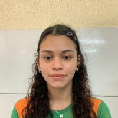
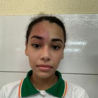
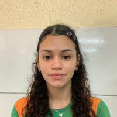
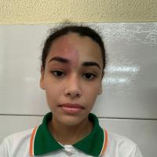

Informações
Escola de Ensino Médio Poeta Otacílio Colares
Localizada na Rua Jorge da Veiga, 265, no bairro Ancuri, em Fortaleza (CE), a escola é uma instituição pública da Rede Estadual de Ensino. Criada pelo Decreto nº 21.247, iniciou suas atividades em 1997.
Hoje, oferece Ensino Médio em tempo integral e turno noturno, com foco em uma formação humanizada, democrática e de qualidade.
A atual diretora é Vera Silva Pereira Pires, conhecida por sua gestão democrática e compromisso com o desenvolvimento humano.
Contato
- Endereço: Rua Jorge da Veiga, 265 – Ancuri, Fortaleza – CE
- CEP: 60873-205
- Telefone: (85) 93101-2161
- Instagram: @planeta_poc

História do Unipoc
O Unipoc nasceu em 2023 como projeto da Feira de Ciências da escola. Inicialmente chamado Planeta POC, era um sistema de agendamentos. Em 2024, foi transformado num site de estudos feito por alunos, com foco no ENEM e UECE.
A ideia cresceu e hoje o site é desenvolvido com HTML, CSS e JAVASCRIPT pelos próprios estudantes, que começaram sem nenhum conhecimento técnico. É um projeto gratuito, colaborativo e aberto.
Dedicatória
Obrigado aos orientadores e professores:
- 2º ano: Clailson N. Jucá
- 3º ano: Augusto A. Neto
- PDT: Paula H. C. Silva
- Feira de Ciências: Jonas F. da Silva
Equipe
2º Ano:
Andressa S. B. Alencar,
David O. Lima,
Hanna K. S. Oliveira,
João P. C. Barbosa,
Maíza O. Lima,
Natállya D. Braga,
Lara F. Bento
3º Ano:
Andressa S. B. Alencar,
David O. Lima,
Evelyn M. Monteiro,
Hanna k. S. Oliveira,
João P. C. Barbosa,
Judith R. N. Almeida,
Maíza O. Lima,
Natallya D. Braga,
Letícia A. Soares


 



Nosso Mascote: Pipo

Perguntas Frequentes
O Unipoc é um site de estudos focado no ENEM e na UECE, criado por alunos da Escola Poeta Otacílio Colares para ajudar estudantes do ensino médio.
Qualquer aluno da escola interessado em conteúdos voltados para o ENEM e UECE pode acessar e usar gratuitamente o site.
Você pode enviar sugestões, dúvidas e mensagens usando a aba de Contato para que a equipe possa analisar e, se possível, implementar melhorias.
Os conteúdos são retirados de fontes da internet, sempre com os devidos créditos e links para a página original. Também usamos inteligência artificial para criar explicações, mas tudo é revisado e testado para garantir que seja verdadeiro.